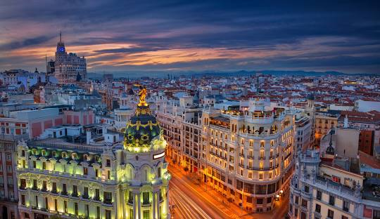

Nombre: Madrid
Población: Posee 3.332.035 habitantes en el 2024
Superficie en km²: 604.3 km²
Descripción:
Madrid es considerada la Capital de las mil opciones. Es destacada por ser alegre y despierta a
todas horas,
además de ser una ciudad abierta en la que se mezcla gente de todo tipo y de cualquier lugar.
Lista de atracciones turísticas más importantes:
- Museo Nacional del Prado
- Museo Nacional Centro de Artes Reina Sofia
- Palacio Real
- Plaza Mayor de Madrid
- Teatro Real
Foto:

Imagen de la ciudad de Madrid